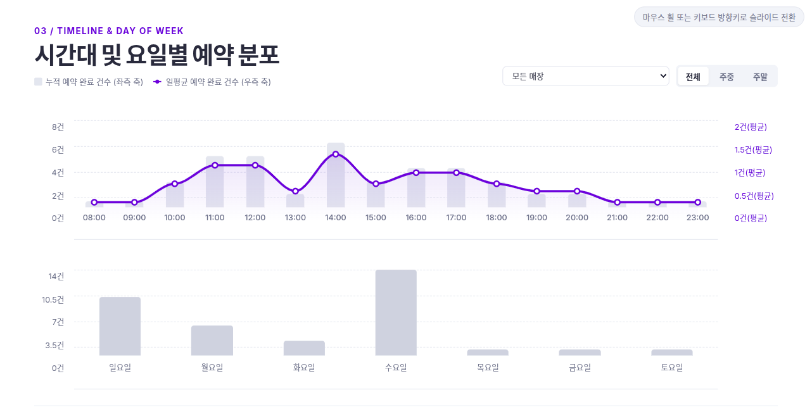

네이버 예약 데이터 기반의 상권 분석 자동화 및
브라우저 전용 다중 날짜 통합 분석 도구
분석 대상 상권의 개별 네이버 예약 페이지를 수동으로 방문하여 시간대별 슬롯 상태를 일일이 수집 및 검토해야 하는 단순 작업이 반복됨.
상권 내 다수 경쟁 업체의 예약 현황을 개별 탐색 후 엑셀에 수작업으로 취합해야 하여 상권 전체 분석에 비효율이 발생함.
단순 시점 열람에 그쳐, 요일별·시간대별 예약 밀집 패턴 분석이나 장기적 흐름을 도출하기 어려움.
